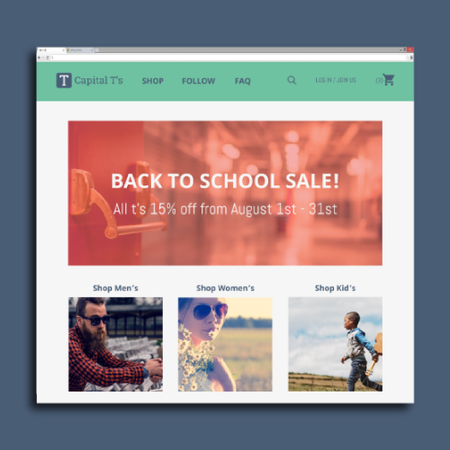
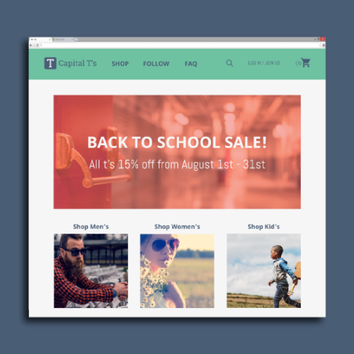
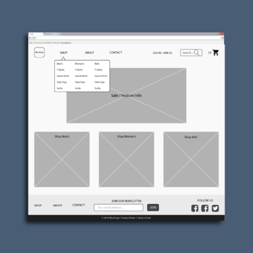
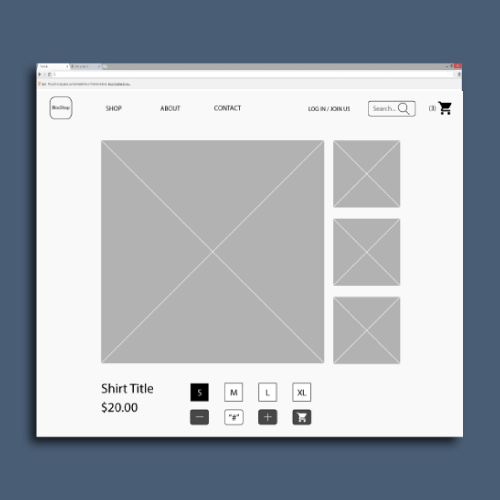
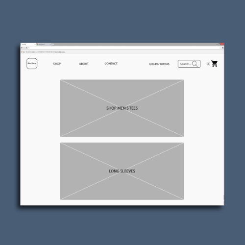
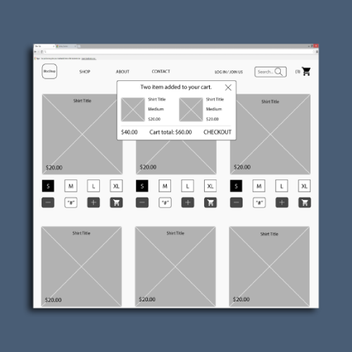
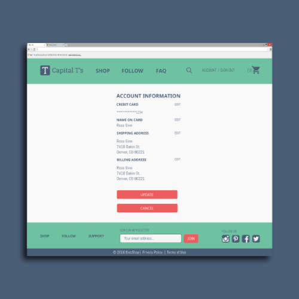
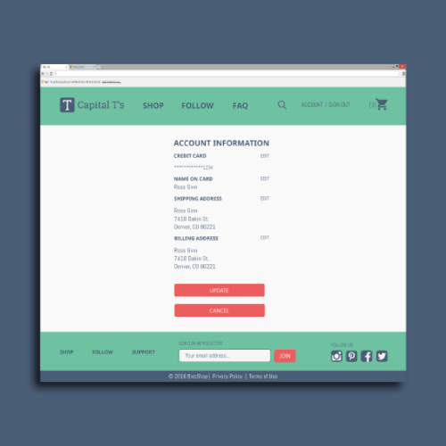

CAPITAL T'S
 

Overview
Getting the time to go clothes shopping can be difficult. Shopping online gives you the chance to get it done sitting at your computer or on your phone, but the checkout process can often be confusing. Capital T's site was designed with ease of use as its main priority. We don't overload the user with options, instead, we shorten the distance between point A and B as much as possible. This makes the site more intuitive and easier for new users to navigate.
 Process
There are countless eCommerce sites to research in preparation for this project, but I focused on three; Threadless, Khol's and GAP. I focused on their strengths and tried to incorporate them for Capital T's use. Threadless has a great layout, so I knew I wanted Captial T's to have a generously padded layout. GAP and Khol's checkout process is very simple and doesn't hinder the flow of the purchase in any way. This would be another corner stone in the planning of the site. The site had to flow, but especially the checkout process. After the research and planning was done I moved on to making wire frames. Knowing the user stories gave me a path to follow when deciding what the user needs to see. After the skeletal structure of the site is put together it must be tested. I made a prototype and had it user tested to expose any flaws. After collecting the data I then reworked the wire frames accordingly. Once The skeleton is complete I add the skin and a fancy haircut. All of the detail is added such as color and typefaces and then its time for a final user test. After making the desired design changes its ready for coding.  
Conclusion
Capital T's will greatly benefit from all of the research based design put into it. It is easy on the eye. Its not cramped like too many of its competitors are. The checkout process was heavily refined and can easily be used by first time users. A soft color palette and airy layout puts all the focus on the product.
 
